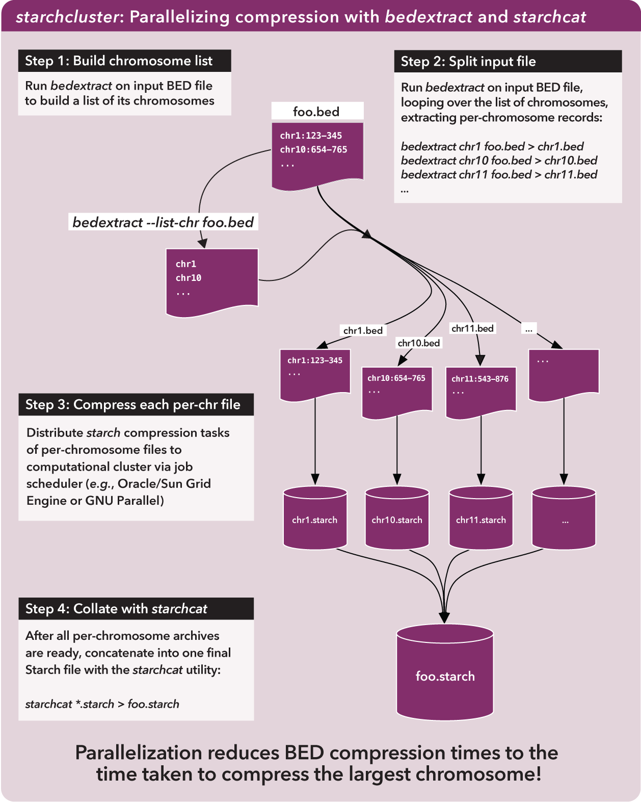

3.6. Efficiently creating Starch-formatted archives with a cluster¶
In this example, we demonstrate how to use bedextract and starchcat to efficiently generate Starch-formatted archives from BED datasets.
3.6.1. BEDOPS tools in use¶
For this script, we use bedextract to quickly build a list of chromosomes in an input BED dataset and extract records for each chromosome to separate files. We then use starch to compress each per-chromosome file and starchcat to concatenate per-chromosome Starch archives into one file.
3.6.2. Script¶
Two versions of the starchcluster script are included with the source and package distributions of BEDOPS (see Installation for more detail).
One version makes use of an Oracle Grid Engine (or Sun Grid Engine) cluster environment to distribute per-chromosome tasks, while the other script uses GNU Parallel to split the workload over hosts running SSH.
3.6.3. Discussion¶
3.6.3.1. Splitting BED files¶
Whole-genome analyses are often “embarassingly parallel”, in that per-chromosome computations can be placed onto separate work nodes, with results collated at the end in “map-reduce” fashion.
If we want to filter any BED file to retrieve elements from a specific chromosome (say, to compress a BED file, one chromosome at a time), to arrange this kind of analysis, one trivial—but very slow—way to do this involves sequentially walking line by line through the file to parse and test each element. This can take a while to do.
However, just as BEDOPS tools use the information in sorted data to apply efficient set and statistical operations, we can use this same information to jump quickly through our data of interest.
Specifically, sorting allows us to perform a binary search:
- We jump to the middle byte of the BED file, stream to the nearest element, then parse and test the chromosome name.
- Either we have a match, or we jump to the middle of the remaining left or right half (decided by dictionary order), parse and test again.
- We repeat steps 1 and 2 until we have matches that define the bounds of the target chromosome.

To indicate the kind of speed gain that the bedextract tool provides, in local testing, a naïve listing of chromosomes from a 36 GB BED input using UNIX cut and uniq utilities took approximately 20 minutes to complete on a typical Core 2 Duo-based Linux workstation. Retrieval of the same chromosome listing with bedextract --list-chr took only 2 seconds (cache flushed—no cheating!).
3.6.3.2. Compressing BED subsets¶
Now we can very quickly demarcate where chromosomes start and stop in a BED file, we can apply starch on those subsets on separate cluster nodes.
3.6.3.3. Stitching together compressed sets¶
Once we have per-chromosome Starch-formatted archives, we need some way to put them all together into one archive. This is where starchcat comes in, taking all the per-chromosome archives as inputs and creating a new archive as output.
The big picture view is like this:
{kind=link}
As the figure notes, the compression time for a very large BED file is reduced roughly to the time taken to compress the largest chromosome in the original file. Parallelization of this process is an order of magnitude faster than compressing chromosomes in serial.